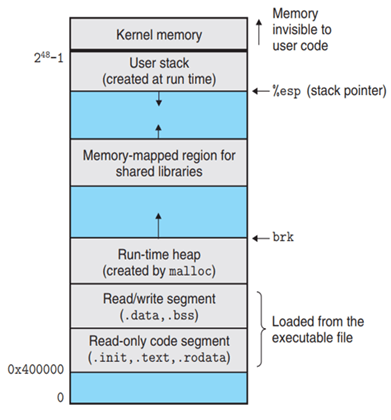

内存布局#
程序在执行时，操作系统会为其创建一个内存镜像（memory image），在程序的眼里，整块内存都为其所用。
生活中有这样的场景，当你拿出一张老唱片或一盒旧磁带准备播放音乐时，首先要打开播放器的卡槽，然后放入唱片或磁带。
计算机在执行某个可执行程序时，也有类似的动作。如下图所示，当执行程序时，操作系统会将我们写好的可执行程序文件，例如 hello，加载到地址 0x400000 的内存槽中，即代码段。这就很像我们插入 CD 的动作。
在 Linux x86-64 系统中，代码段的地址总是从地址 0x400000 处开始。

我们的播放器只能读取 CD 上的音乐信息，不能进行任何修改。如果播放器可以随意修改，那么下一次播放的时候，音乐可能已经消失。这将造成严重的数据丢失问题。
同理，我们写好的程序也应该不允许随意地修改。例如你写的 main 函数用于打印 "hello world"，如果下次打印出 "hallo morld"，这也将造成严重的安全问题。
所以，加载后的内存开头部分，系统规定为只读的，即 Read-only code segment。这个区域包含我们写好的函数指令（位于 .text 只读代码段）以及字符串的字面量（位于 .rodata 只读数据段）。
当然，我们的程序比 CD 要强大很多，除了只读数据段，再往后还有一段可以用于存放全局变量和静态变量，这个区域是可读可写的，即 Read/write segment。所以数据段分为只读、读写两个区域。
数据段之后就是堆内存，话题 3 将重点讨论。该区域是由程序员自行管理的，可以分配内存也可以释放内存。
堆内存后面的区域是共享库保留区。因为静态库会编译到我们的可执行文件中，这会造成程序文件增加，浪费硬盘空间，加载到内存区后，也会造成内存占用。所以对于一些 printf 这些标准库函数来说，映射到共享库区域是最佳的选择。
用户栈一般从最大合法用户地址处 \(2^{48}-1\) 开始，向较小的内存地址增长。而从 \(2^{48}-1\) 地址往上的区域，是为操作系统内核保留的。